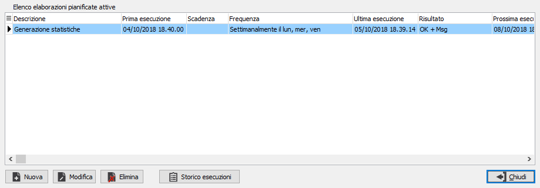
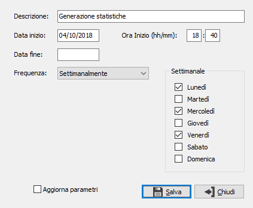
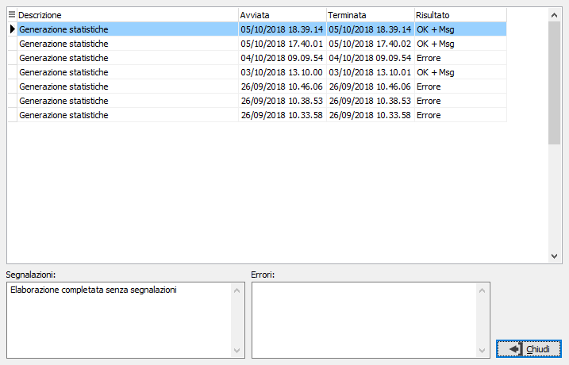
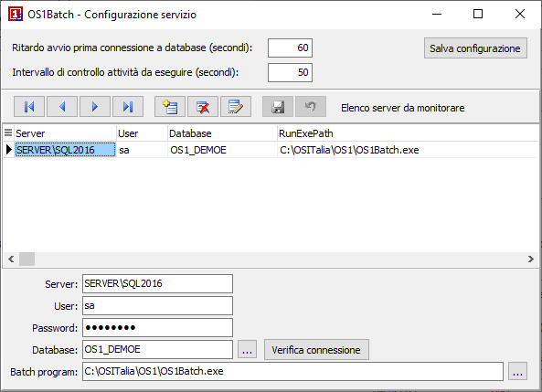

Gestione elaborazioni batch
(OS1Batch)
La possibilità di eseguire funzionalità in modalità
batch può essere utilizzata per qualsiasi funzione a patto che quest’ultima
sia stata realizzata con determinate caratteristiche.
Le funzioni che attualmente sono disponibili anche
in modalità batch sono:
L'attivazione della funzionalità è configurabile tramite
l'opzione “Abilita pianificazione batch” presente nelle "Opzioni"
(dell’applicazione, della ditta,
del gruppo utenti o dell’utente) a livello di configuratore di
applicazione (XConfig).
 Per poter schedulare una procedura
è necessario prima di tutto impostare i parametri di elaborazione e definire
la periodicità e data/ora di esecuzione. Allo scopo nelle funzioni sopra
elencate è presente un bottone Pianifica che mostrerà la seguente finestra:
Per poter schedulare una procedura
è necessario prima di tutto impostare i parametri di elaborazione e definire
la periodicità e data/ora di esecuzione. Allo scopo nelle funzioni sopra
elencate è presente un bottone Pianifica che mostrerà la seguente finestra:

La finestra mostra l'elenco delle elaborazioni attive,
relative alla procedura da cui si è premuto il pulsante Pianifica; per
ogni operazione pianificata viene mostrata una breve descrizione, la data
e ora relative alla prima esecuzione, l'eventuale scadenza, la frequenza,
l'ultima esecuzione, il risultato e la data ed ora della prossima esecuzione;
le operazioni con frequenza "Una volta" sono visibile fino al
momento dell'esecuzione, una volta eseguite non compariranno più nell'elenco.
I pulsanti in basso elencano le operazioni che è possibile
effettuare: Eliminare una operazione pianificata, inserire una nuova pianificazione
o modificare una già esistente e visualizzare lo storico delle operazioni
effettuate per questo tipo di elaborazione. Il pulsante Nuovo e Modifica
danno accesso alla seguente finestra:

Nella finestra di inserimento/modifica la descrizione
e la data di inizio vengono proposti in automatico, è necessario specificare
l'ora di inizio e se si vuole anche una data di fine a partire dalla quale
l'elaborazione non dovrà più essere pianificata; la frequenza può essere:
Una
volta: l'operazione sarà pianificata alla data ed ora indicata una
sola volta e non sarà mai ripetuta; una volta effettuata non sarà
più visibile nell'elenco delle attività attive.
Settimanalmente:
l'operazione sarà pianificata dalla data ed ora indicata ed eseguita
nei giorni della settimana che saranno indicati mediante la spunta;
l'operazione sarà visibile nell'elenco delle attività attive fino
a quando non sarà eliminata o trascorrerà la data di fine se impostata.
Mensilmente:
l'operazione sarà pianificata dalla data ed ora indicata ed eseguita
il giorno del mese che sarà indicato dall'utente; l'operazione sarà
visibile nell'elenco delle attività attive fino a quando non sarà
eliminata o trascorrerà la data di fine se impostata.
Il pulsante Storico esecuzioni mostra una finestra
in cui vengono riportate tutte le esecuzioni passate con l'indicazione
dell'avvio, del termine e del risultato; per ognuna vengono anche mostrati,
nei riquadri in basso, eventuali segnalazioni e messaggi di errore; facendo
doppio clic con il mouse sui suddetti riquadri si apre una finestra dove
viene mostrato per esteso il contenuto con la possibilità di stamparlo
o copiarlo negli appunti.

La schedulazione viene presa in carico dal servizio
che sarà installato sul server. Tale servizio ha un proprio programma
di configurazione che consente di definire su quali database attivare
il monitoraggio dei batch.

Per ogni azienda è necessario indicare nome del Server SQL (istanza
SQL), user name e password; è disponibile un pulsante per selezionare
il nome del database ed uno per testare la connessione; inoltre è necessario
indicare il nome del programma dedicato all'esecuzione batch (OS1Barch);
la pressione del pulsante Salva configurazione effettua il salvataggio
dei dati inseriti.